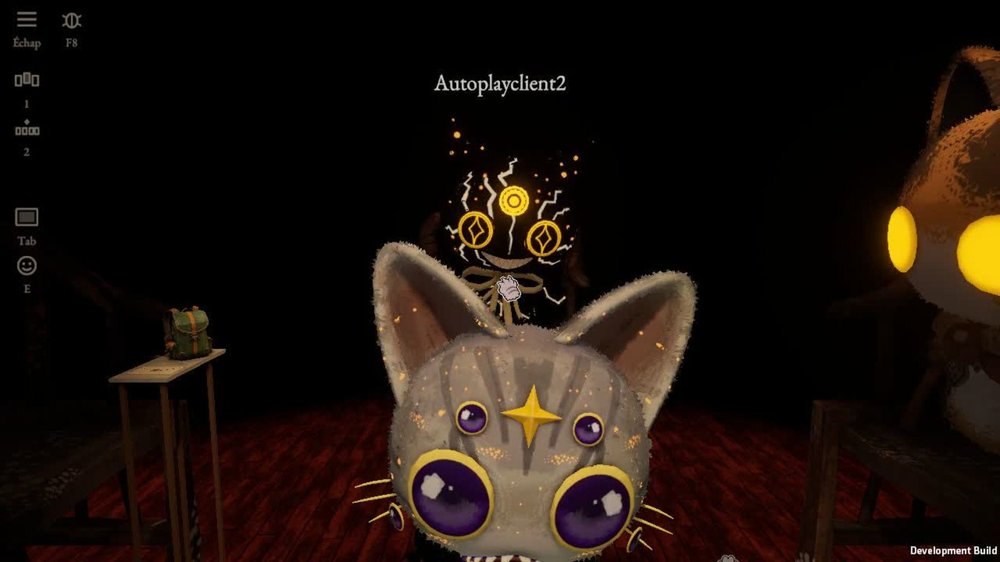

Cercle du jour : champ de vision et grandes tables
Choisi en v2. Tout le monde sur un seul cercle, les autres chats à ta taille (T1), cercle de 24 m à 4 joueurs (R3), le chat enchaîné à sa vraie taille au milieu (E2).
Référence. Dans la plupart des jeux à la première personne, le « FOV » se compte en largeur : 103 par défaut dans Overwatch et Valorant, 90 dans Counter-Strike. Unity, lui, le compte en hauteur : aujourd'hui 40 en hauteur, soit 66 en largeur sur un écran 16:9. « 85 » donne donc deux vues très différentes selon le sens. Lu sur des fiches, pas mesuré en jeu.
Aujourd'hui. Le jeu est à 40 en hauteur. Sur un seul cercle, plus il y a de joueurs, plus tes voisins cachent les suivants : la règle actuelle (la moitié de chaque chat visible depuis tes yeux) fait grandir le cercle à 43 m à 12 joueurs et 58 m à 14. C'est ça qui le rendrait immense, pas le « deux fois plus grand » de R3.
La scène. Premier vote : les trois autres vrais joueurs tournent la tête vers toi. Captures du vrai jeu. À 8 et 12 joueurs, les places des bots ont un chat immobile copié de celui d'un joueur, éclairé comme les autres : en partie de test, un bot n'a pas de chat.
Sans question. Le champ de vision change aussi la nuit, autour de la table : c'est la même caméra. À 4, 6 et 8 joueurs, le cercle reste à 24 m dans toutes les règles ci-dessous. La vue au repos se cale sur le visage d'en face pour chaque champ de vision.
Le champ de vision
À 4 joueurs, cercle de 24 m.
À 12 joueurs, le cercle
Le champ de vision se choisit dans la barre du haut.
Pour comparer, sans vote
